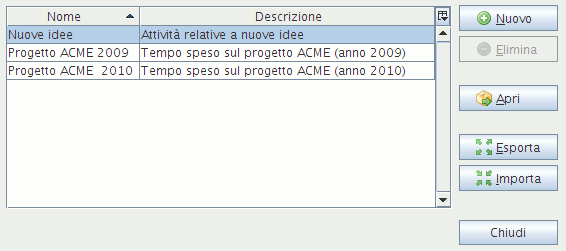

Editor dei progettiL'editor dei progetti serve per fare manutenzione sui vostri progetti. E' raggiungibile dalla voce |Strumenti|Progetti| del menù principale oppure dalla finestra finestra "Apri progetto".

L'editor dei progetti è una finestra costituita da una tabella che mostra una riga per ogni progetto del sistema. Per aggiungere un nuovo progetto cliccare sul pulsante Nuovo e digitarne il nome. Nella tabella comparirà una nuova riga dedicata al progetto appena creato. Per cancellare un progetto, selezionarlo e cliccare sul pulsante Elimina. Il progetto attualmente in uso non può essere eliminato. Per modificare il nome di un progetto o la sua descrizione, selezionare la relativa cella e fare un doppio click o premere il tasto F2 per procedere con le modifiche. Per utilizzare un progetto – rendendolo il progetto corrente – cliccare sul pulsante Apri. E' possibile inoltre esportare il progetto selezionato o importarne uno. |